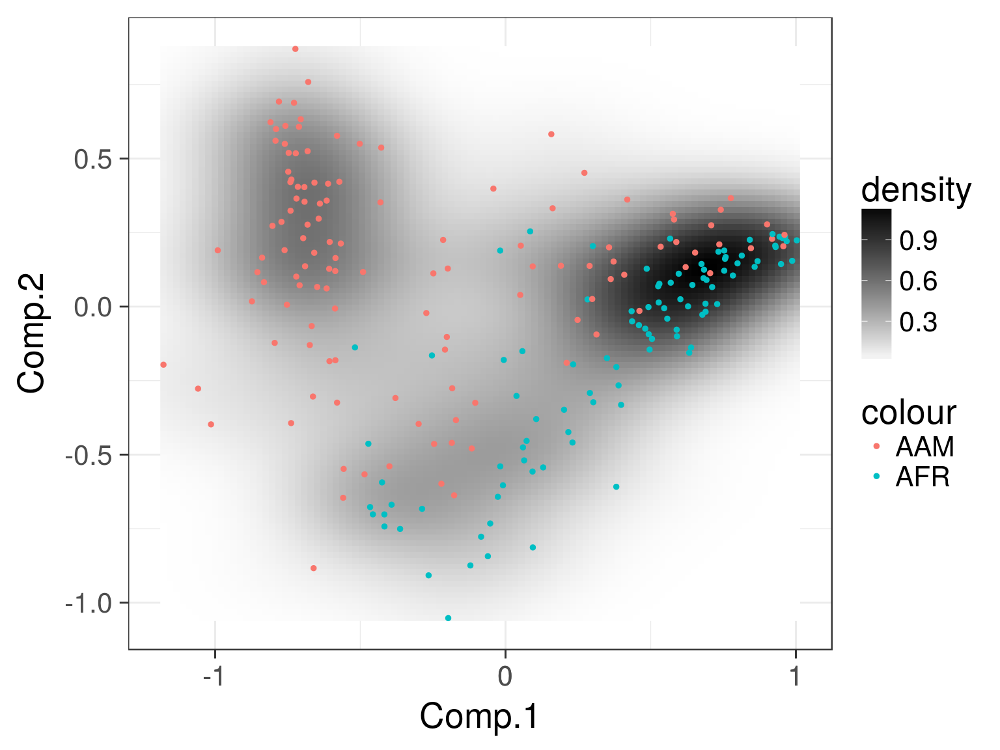
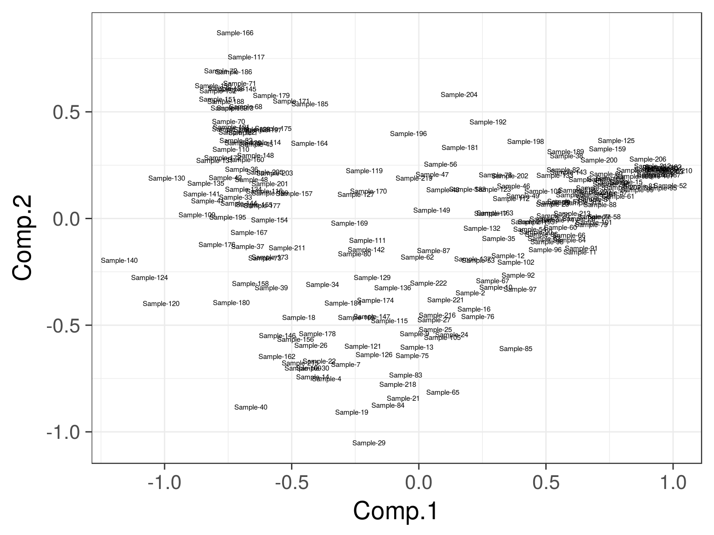
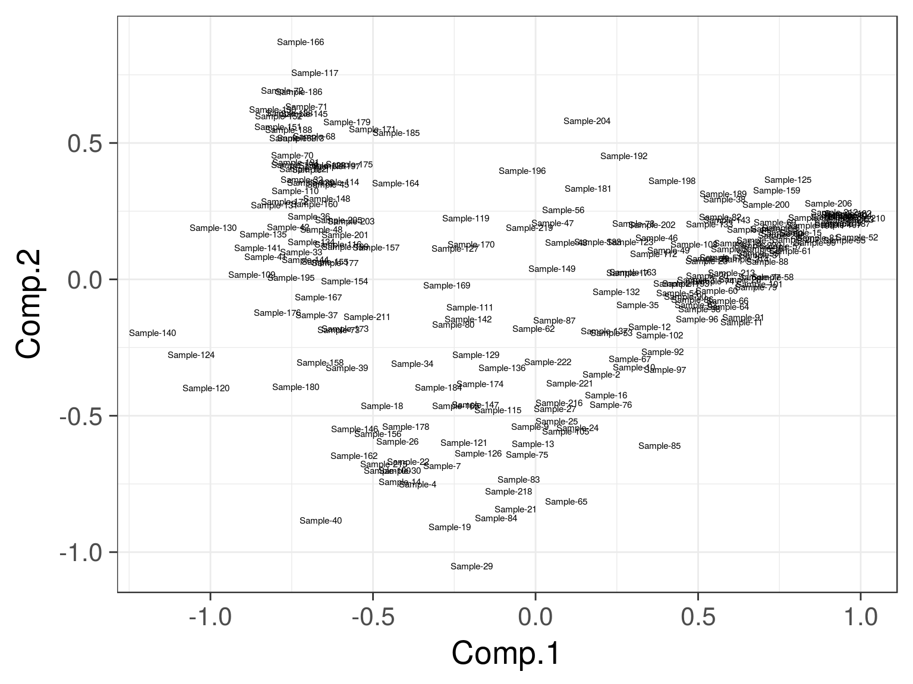
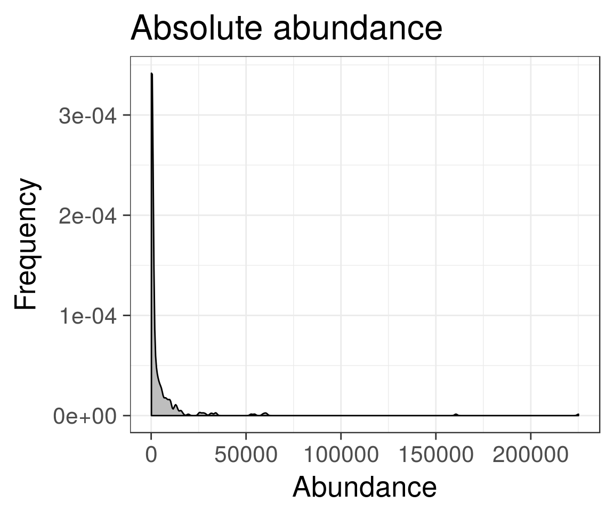
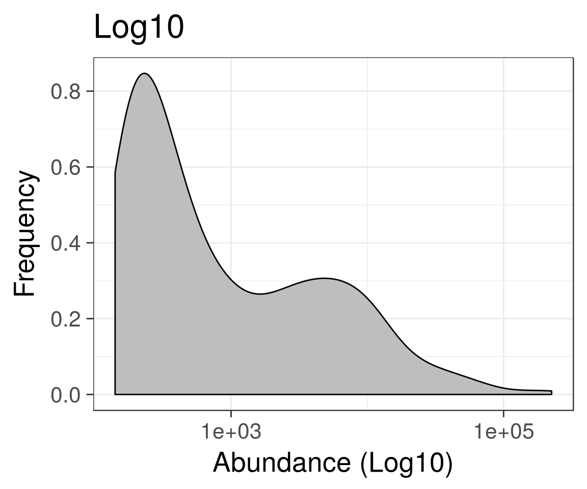
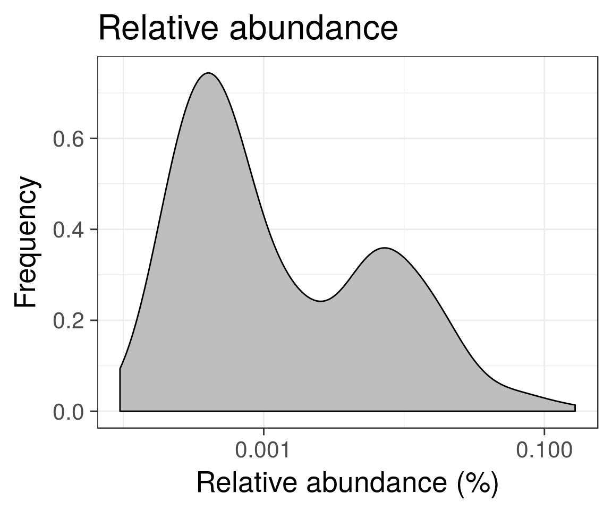

Microbiome Landscapes
Microbiome Landscaping
Microbiome Landscaping refers to the analysis and illustration of population frequencies. Typically, these are wrappers based on standard ordination methods (for more examples, see ordination examples)
Two-dimensional microbiome landscape
Load example data:
library(microbiome)
library(phyloseq)
library(ggplot2)
data(dietswap)
pseq <- dietswap
# Convert to compositional data
pseq.rel <- transform(pseq, "compositional")
# Pick core taxa with with >10 percent prevalence of the samples
# at a >1 percent relative abundance min.density
pseq.core <- core(pseq.rel, detection = .01, prevalence = .1)Visualize the microbiome landscape (sample similarities on two-dimensional projection):
# Landscape plot directly from phyloseq object
p <- plot_landscape(pseq.core, "NMDS", "bray", col = "nationality")
print(p)
For direct access to the ordination coordinates, use the following:
# Project the samples with the given method and dissimilarity measure.
# Ordinate the data; note that some ordinations are sensitive to random seed
# "quiet" is used to suppress intermediate outputs
set.seed(423542)
quiet(proj <- get_ordination(pseq.core, "NMDS", "bray"))
# Same with a generic data.frame
# (note that random seed will affect the exact ordination)
p <- plot_landscape(proj[, 1:2], col = proj$nationality, legend = T)
print(p)
# Visualize sample names:
ax1 <- names(proj)[[1]]
ax2 <- names(proj)[[2]]
p <- ggplot(aes_string(x = ax1, y = ax2, label = "sample"), data = proj) +
geom_text(size = 2)
print(p) 

Abundance histograms (one-dimensional landscapes)
Population densities for Dialister:
# Load libraries
library(microbiome)
library(phyloseq)
# Example data from
# http://www.nature.com/ncomms/2014/140708/ncomms5344/full/ncomms5344.html
data(atlas1006)
# Pick the subset of RBB-preprocessed samples from time point 0
x <- subset_samples(atlas1006, time == 0 & DNA_extraction_method == "r")
# Visualize population densities for specific taxa
plot_density(x, "Dialister") + ggtitle("Absolute abundance")
# Same with log10 scaled X axis
plot_density(x, "Dialister", log10 = TRUE) + ggtitle("Log10")
# Same with log10 compositionals
x <- transform(x, "compositional")
tax <- "Dialister"
plot_density(x, tax, log10 = TRUE) +
ggtitle("Relative abundance") +
xlab("Relative abundance (%)")